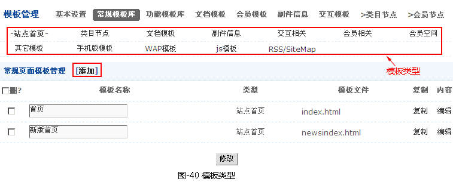
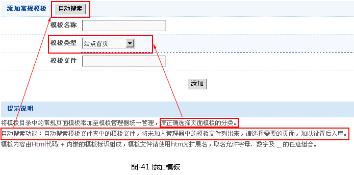
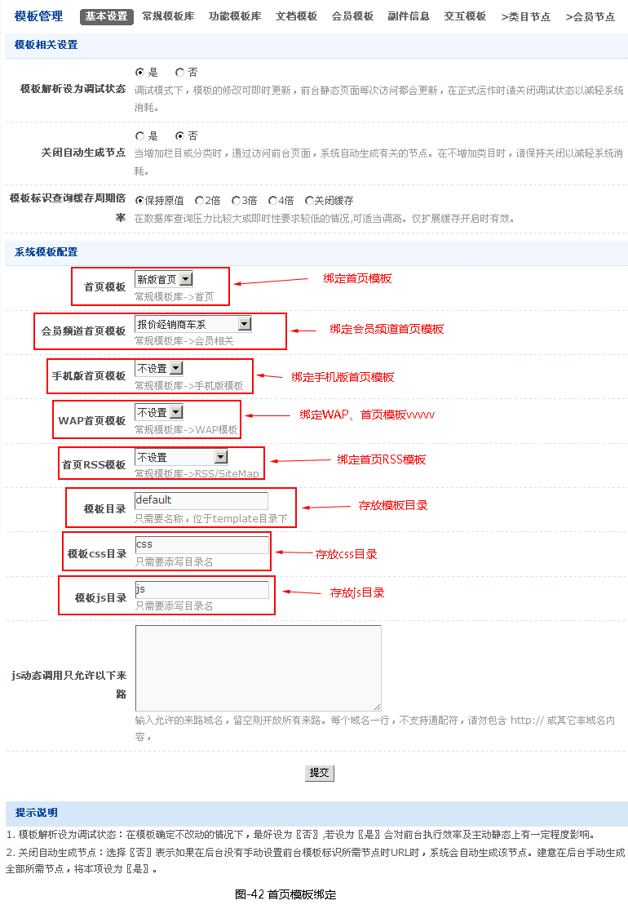
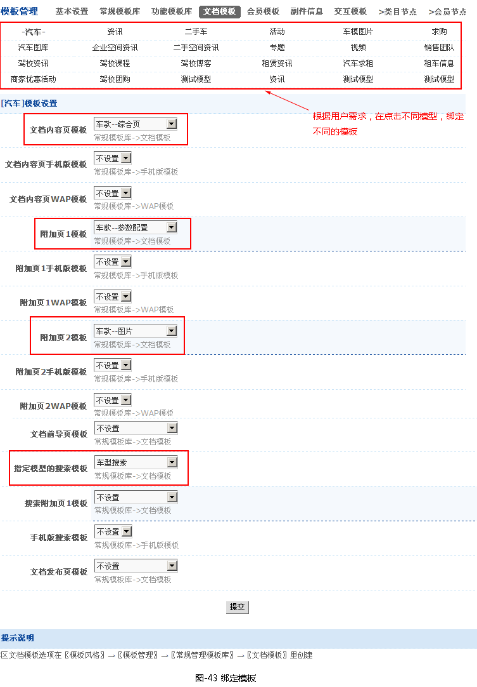
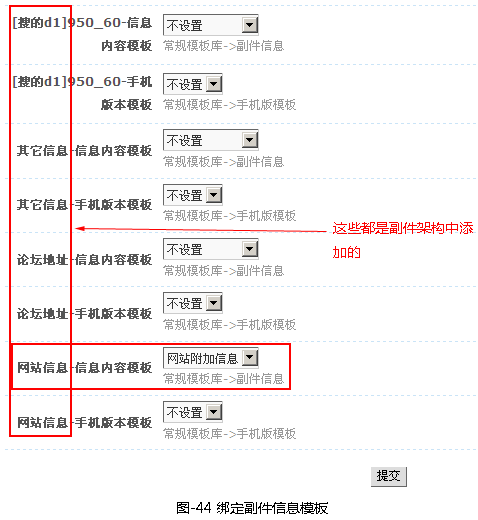
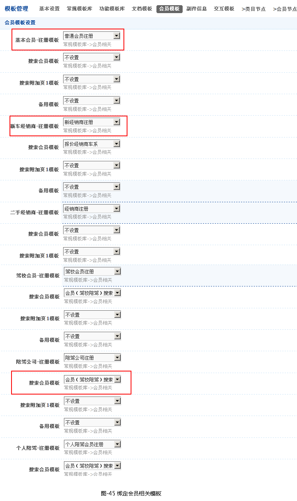
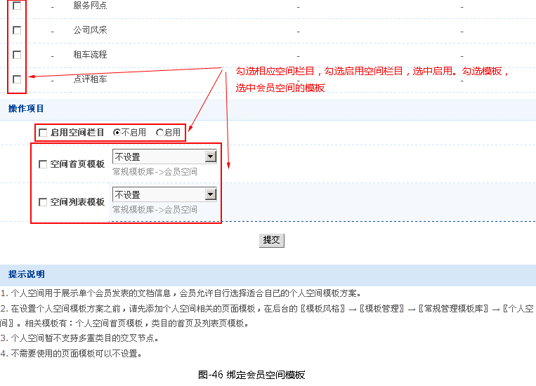
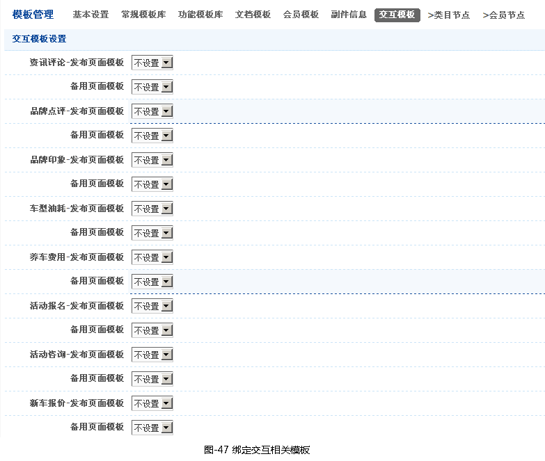
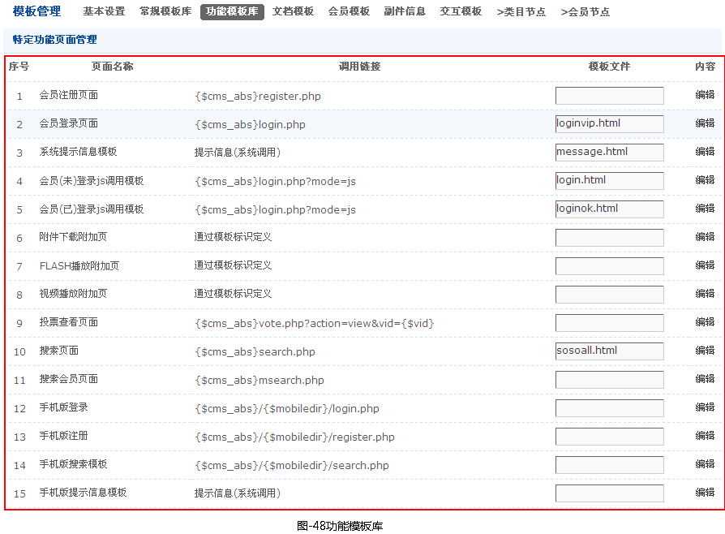

模板管理
一、前言
模板，就是网页设计人员设计静态页面，并套标签的页面。针对内容不同，还将模板分类（如首页、列表页、内容页、搜索页等），对此，在系统内部把绑定模板就不同。
二、模板管理
- 2.1添加模板
-
在【模板风格】->【模板管理】->【常规模板】中可看到划分好几种类型，（这几种类型已在菜单手册这一章已分析），如图-40所示。

根据用户需求，添加模板，点击添加链接，弹出添加常规模板窗口，如图-41所示。

- 2.2绑定模板
-
1.绑定首页模板，会员频道首页模板，手机版首页模板，WAP首页模板和首页RSS模板，就在【模板风格】->【模板管理】->【基本设置】，如图-42所示。

2.绑定类目节点模板（请看类目管理与节点这一篇中的类目节点，这就不详细解析。）
3.绑定文档模板，就在【模板风格】->【模板管理】->【文档模板】，不同模型添加不同文档模板，如图-43所示。

4.绑定副件信息模板，就在【模板风格】->【模板管理】->【副件信息】，如图-44所示。

5.绑定会员相关模板，就在【模板风格】->【模板管理】->【会员模板】，如图-45所示。

6.绑定会员空间模板，就在【模板风格】->【空间模板】->【对应空间模板方案会员模板】->详情，为空间栏目绑定模板，如图-46所示。

7.绑定交互相关模板，就在【模板风格】->【模板管理】->【交互模板】，如图-47所示。

- 2.3功能模板库
功能模板库-添加会员注册页面、登录页面等，如图-48所示。

注意：
1. 功能页面项是由系统根据网站配置自动生成，各页面项的模板文件及其内容由用户添加与管理。
2. 通常使用链接来调用功能页面，链接样式请参照本页中列出的样式，如果不使用该功能，可以不设置该页面模板。
3. 模板内容由Html代码 + 内嵌的模板标识组成，模板文件请使用htm为扩展名，取名允许字母、数字及 _ 的任意组合。
4. 如果是Linux系统，请将 .\template 及作为当前模板目录的子文件夹的权限设为 0777。